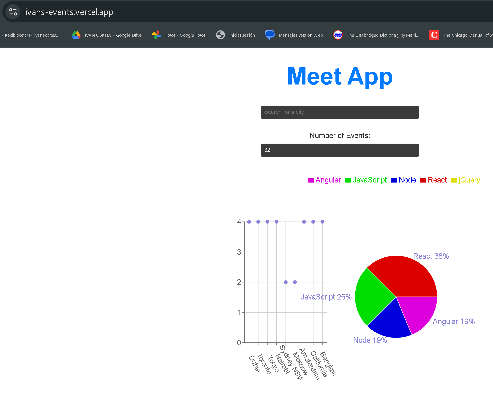
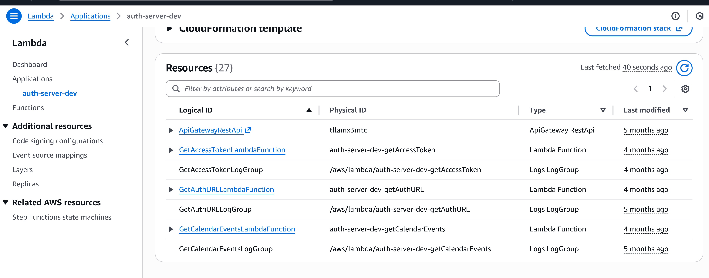
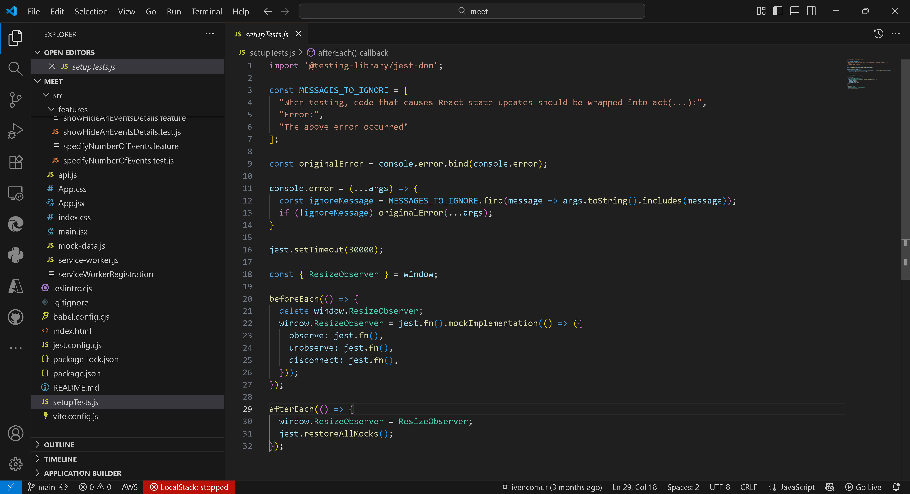
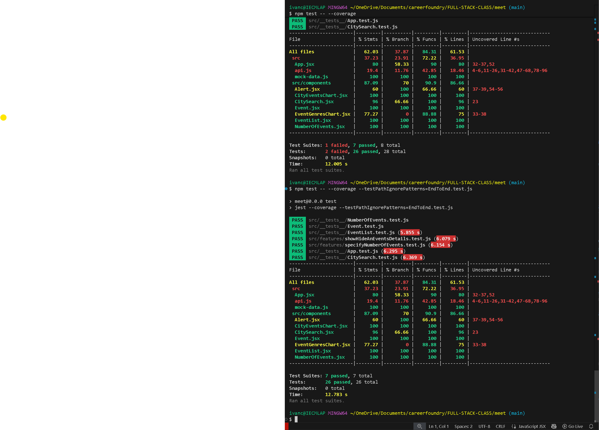
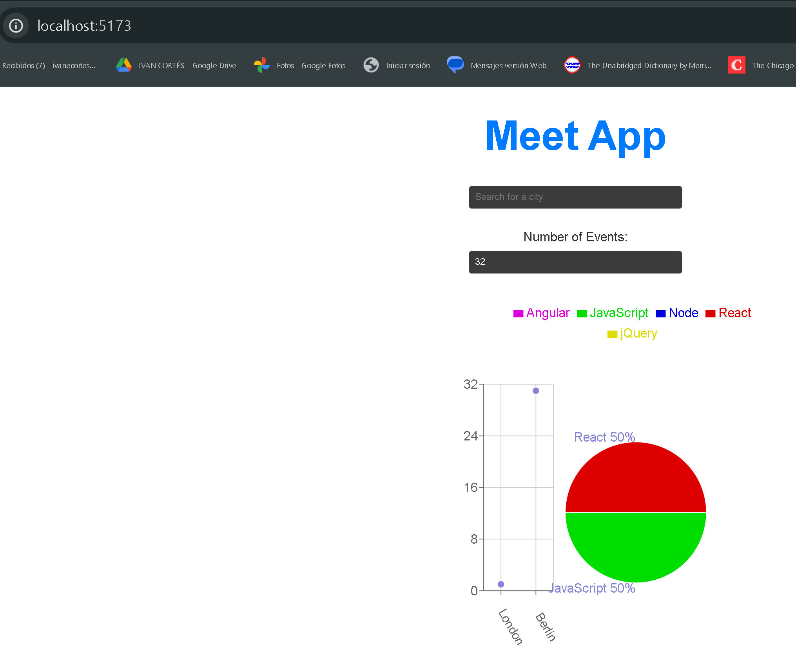
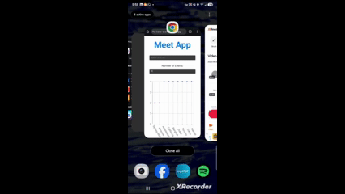

A Case Study in Serverless Architecture and Test-Driven Development
Responsible for TDD, serverless functions, API integration, and PWA features.
(July 2025 – August 2025)
The core of this project was not just to build a functional app, but to build it using a specific, professional methodology (TDD) and a modern, secure architecture (serverless).
Implementing a Secure, Serverless API using AWS Lambda...

Adhering to Strict TDD using Jest and React Testing Library...


Offline Capability & Data Visualization (PWA)...

The result is a fully functional, installable PWA that provides real-world event data.

This project was a deep dive into the "test-first" mindset...